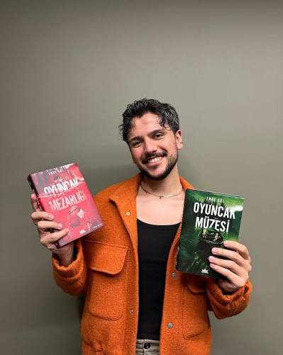

Emre Gül

Emre Gül, küçük yaşlardan itibaren yazmaya ilgi duyan ve zamanla bu ilgisini yazarlık kariyerine dönüştüren bir yazardır. Yazmayı kendini ifade etmenin bir yolu olarak gören Gül, yazarlık yolculuğunda Wattpad gibi dijital platformlardan yararlanmış ve zamanla eserlerini basılı kitaplarla okurlarla buluşturmuştur.Sinema, resim ve müzik gibi sanat dallarına duyduğu ilgi dehikâyelerini oluştururken farklı bakış açılarından beslenmesine katkı sağlamıştır.
Nar, Bal, Kar ve Yalancılar ve Yabancılar gibi eserleriyle tanınan Emre Gül, kitaplarının hazırlanma sürecindeki ayrıntılara ve görsel tasarıma verdiği önemle de dikkat çeker. Onun yazarlık yolculuğu, hayal gücünü hikâyelere dönüştürmenin ve bu hikâyeleri okurlarla paylaşmanın bir örneğidir. Eserleriyle okurlarına farklı dünyaların kapılarını aralayan yazar, edebiyat yolculuğunu yeni hikâyelerle sürdürmektedir.